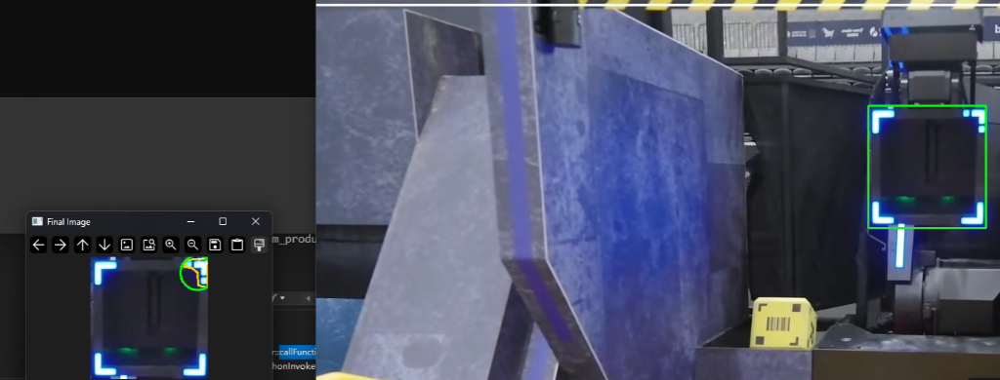
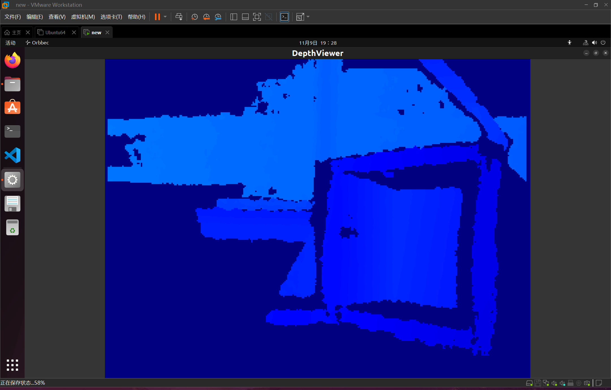

RoboMaster 机械臂视觉伺服系统
本项目为 RoboMaster 机甲大师超级对抗赛设计并实现了一套在边缘设备上运行的实时机械臂视觉伺服系统。 系统采用 eye-in-hand 构型，通过传统视觉流水线（无 GPU 推理）完成目标矿石的检测、定位与抓取。 整体流水线在 Intel NUC i5-1135G7 上实现 13.5 ms/帧（约 74 FPS）的处理速度。 赛事获省级二等奖（区域赛）与国家级三等奖（全国赛）。
1 系统概述
1.1 任务背景
RoboMaster 超级对抗赛中，工程机器人需从矿仓中取出金/银矿石并运送至兑换站。 矿石为纯色圆柱体（金色或银色），放置于不同高度的矿仓格位中。机械臂末端安装夹爪， 需在运动中完成视觉识别、逼近、对准与抓取。作为第一负责人，本人负责整套视觉系统的算法设计、 软件架构与联调部署。
1.2 硬件平台
| 组件 | 型号/规格 | 备注 |
|---|---|---|
| 计算平台 | Intel NUC i5-1135G7 | 仅 CPU，无独立 GPU |
| 相机 | 鱼眼工业相机，3.37 mm F2.8 | eye-in-hand，安装于末端连杆 |
| 机械臂 | 自研 6-DOF 串联臂 | RoboMaster 标准电机 |
| 通信 | CRC16 串口协议 | NUC ↔ STM32 主控 |


2 视觉流水线
考虑到边缘设备的算力约束（无 GPU），本项目放弃了基于神经网络的检测方案， 转而设计了一套纯 OpenCV 的六阶段流水线。以下逐阶段说明其原理与实现。

2.1 阶段一：色彩空间变换
原始 BGR 图像同时转换为 HSV 与灰度两个通道。HSV 空间用于按色相（Hue）分割金/银矿石的颜色区域； 灰度通道保留亮度梯度信息，为后续边缘检测提供输入。双通道并行处理使得系统在不同光照条件下均具备鲁棒性。
Mat ProducePictureXYW::color_detection(Mat& img)
{
Mat Mask, imgExtracted, imgHSV;
cvtColor(img, imgHSV, COLOR_BGR2HSV);
// 蓝色区域掩膜
Scalar lower_blue(38, 135, 100);
Scalar upper_blue(179, 255, 255);
inRange(imgHSV, lower_blue, upper_blue, Mask);
// 灰度通道二次筛选
Mat imgGray;
cvtColor(img, imgGray, COLOR_BGR2GRAY);
inRange(imgGray, Scalar(100), Scalar(200), Mask);
imgExtracted = Mat::zeros(img.size(), img.type());
img.copyTo(imgExtracted, Mask);
return imgExtracted;
}
2.2 阶段二：边缘检测与形态学处理
对灰度图施加 Canny 边缘检测（双阈值自适应），随后进行形态学闭运算（morphologyEx CLOSE）
填补边缘断裂。闭运算的结构元素为 5×5 矩形核，迭代 2 次。该步骤将离散边缘像素连接为完整轮廓，
为后续的轮廓筛选创造条件。
2.3 阶段三：多准则轮廓筛选
对检测到的所有轮廓施加四项几何约束进行筛选：
- 面积阈值：丢弃面积过小（噪声）或过大（背景）的轮廓；
- 长宽比：矿石截面近圆，要求长宽比在 [0.6, 1.7] 范围内；
- 圆度：计算
4π·Area / Perimeter²，阈值 > 0.5； - 凸度：轮廓面积与凸包面积之比，阈值 > 0.8。
findContours(imgDil, contours, hierarchy, RETR_EXTERNAL, CHAIN_APPROX_NONE);
for (size_t i = 0; i < contours.size(); i++)
{
if (contourArea(contours[i]) > 200)
{
RotatedRect minRect = minAreaRect(contours[i]);
float width = minRect.size.width;
float height = minRect.size.height;
float aspectRatio = max(width, height) / min(width, height);
if (aspectRatio > 0.4 && aspectRatio < 3.5)
{
peri = arcLength(contours[i], true);
approxPolyDP(contours[i], conPoly[i], 0.02 * peri, true);
int objCor = conPoly[i].size();
if (objCor >= 4 && objCor <= 15)
{
double rect_area = width * height;
double extent = contourArea(contours[i]) / rect_area;
if (extent >= 0.35 && extent <= 0.75)
{
Point2f center;
float radius;
minEnclosingCircle(conPoly[i], center, radius);
circleCenters.push_back(center);
}
}
}
}
}
经过四级过滤后，误检轮廓被大幅剔除，仅保留真正的矿石候选。
2.4 阶段四：最小外接圆拟合
对筛选后的轮廓调用 cv::minEnclosingCircle，得到矿石在图像平面上的圆心坐标 (u, v) 与半径 r。
圆心即为目标的 2D 像素位置，半径用于粗略估计目标距离（近大远小）。
2.5 阶段五：PnP 6-DOF 位姿估计
已知矿石的物理直径（先验），结合相机内参矩阵与畸变系数（预标定），
构造 3D-2D 点对并调用 cv::solvePnP（ITERATIVE 方法），
解算目标相对于相机坐标系的 6-DOF 位姿（平移向量 t 与旋转向量 r）。
该位姿直接用于后续的末端轨迹规划。
vector<Point3f> objectPoints = {
{-w_length / 2, -h_length / 2, 0.0f},
{ w_length / 2, -h_length / 2, 0.0f},
{ w_length / 2, h_length / 2, 0.0f},
{-w_length / 2, h_length / 2, 0.0f}
};
Mat cameraMatrix = (Mat_<double>(3, 3) <<
501.356, 0, 635.693,
0, 501.264, 488.572,
0, 0, 1);
Mat distCoeffs = (Mat_<double>(1, 5) <<
-0.3391, 0.1520, -1.144e-05, -3.299e-05, -0.03573);
Mat rvec, tvec;
solvePnP(objectPoints, imagePoints, cameraMatrix, distCoeffs, rvec, tvec);
m_SolvePNP_RT.push_back(tvec.at<double>(0, 0)); // x
m_SolvePNP_RT.push_back(tvec.at<double>(1, 0)); // y
m_SolvePNP_RT.push_back(tvec.at<double>(2, 0)); // z
m_SolvePNP_RT.push_back(rvec.at<double>(0, 0)); // pitch
m_SolvePNP_RT.push_back(-rvec.at<double>(1, 0)); // yaw
m_SolvePNP_RT.push_back(rvec.at<double>(2, 0)); // roll


2.6 YOLO 方案对比与弃用
开发初期曾测试 YOLOv5n / YOLOv8n 检测方案。在 NUC 上通过 OpenVINO 推理可达约 30 FPS， 但存在以下问题：(1) 对纯色目标鲁棒性不如传统视觉分割；(2) 模型需针对赛场光照重新训练， 泛化成本高；(3) 推理延迟约为传统方案的 2.5 倍。最终选择传统视觉方案。


3 逆运动学求解
3.1 问题建模
机械臂为 6-DOF 串联结构。给定末端目标位姿 (x, y, z, roll, pitch, yaw)，需求解各关节角度。 对于前三个关节（决定末端位置），采用余弦定理构造解析解；后三个关节（决定姿态）由腕部解耦处理。
ARM_BASE DHCoord::inverse_kinematics(double x, double y, double z,
double pitch, double yaw, double roll)
{
ARM_BASE ArmStat;
if (sqrt(x * x + y * y) > 80) { // 超出工作空间
ArmStat.stat = 1;
return ArmStat;
}
ArmStat.z = z - ArmStat.arm4 * sin(pitch);
ArmStat.pitch = pitch;
ArmStat.roll = roll;
double arm_x = x - (ArmStat.arm3 + ArmStat.arm4 * cos(-pitch)) * cos(yaw);
double arm_y = y - (ArmStat.arm3 + ArmStat.arm4 * cos(-pitch)) * sin(yaw);
double r = sqrt(arm_x * arm_x + arm_y * arm_y);
double psi1 = atan2(arm_y, arm_x);
// 余弦定理求肘关节角
double cos_b = (-r*r + ArmStat.arm1*ArmStat.arm1
+ ArmStat.arm2*ArmStat.arm2) / (2 * ArmStat.arm1 * ArmStat.arm2);
cos_b = std::clamp(cos_b, -1.0, 1.0);
ArmStat.angle2 = acos(cos_b);
double cos_psi2 = (ArmStat.arm1*ArmStat.arm1 + r*r
- ArmStat.arm2*ArmStat.arm2) / (2 * ArmStat.arm1 * r);
cos_psi2 = std::clamp(cos_psi2, -1.0, 1.0);
ArmStat.angle1 = psi1 + acos(cos_psi2);
ArmStat.yaw = yaw - ArmStat.angle1 - ArmStat.angle2;
// 正运动学验证...
}
余弦定理可能产生双解（肘上/肘下），通过正运动学验证选取可行解。
3.2 双路径实现
项目中实现了两套独立的 IK 求解器，用于交叉验证与鲁棒性保障：
- Ceres Solver 方案：利用 Google Ceres 的 AutoDiff 自动微分功能， 将 IK 建模为非线性最小二乘问题，由 Levenberg-Marquardt 算法迭代求解。 优势在于易于扩展至更复杂的臂型。
- 纯 Eigen 手写方案：手动推导 Jacobian 矩阵， 用 Eigen 库实现 Levenberg-Marquardt 迭代。计算效率更高（约 0.3 ms/次）， 适用于实时控制。

.png)
4 轨迹规划与下位机通信
4.1 笛卡尔空间轨迹插值
为避免关节空间插值导致的末端路径不可预测，采用笛卡尔空间等间距插值。 将起始位姿到目标位姿在 xyz 三轴上均匀分为 10 步，逐步发送至下位机执行。 每步时间间隔根据通信帧率与机械响应动态调整，确保运动平滑无抖动。
4.2 CRC16 串口通信协议
上位机（NUC）与下位机（STM32）之间采用自定义帧协议通信：
#pragma pack(push, 1)
struct PacketSend {
uint8_t head; // 0xA5 包头
float armAngle1, armAngle2; // 机械臂关节角
float handAngle2, handAngle1;// 末端姿态
uint8_t roll_mode;
float handAngle3;
uint8_t z_mode;
float armZ; // Z 轴升降
float car_dx, car_dy; // 底盘平移
uint16_t checksum; // CRC16 校验
PacketSend(/* ... */) {
if (cs == 0)
checksum = calculateCRC16(
reinterpret_cast<const uint8_t*>(&temp), sizeof(temp));
}
};
#pragma pack(pop)
// 接收端 CRC 验证
void Commute::receive(std::vector<uint8_t>& receive_data) {
uint16_t calc = PacketReceive::calculateCRC16(
receive_data.data(), receiveDataSize - 2);
uint16_t recv = receive_data[receiveDataSize - 2]
| (receive_data[receiveDataSize - 1] << 8);
pd_crc_error = (calc != recv);
}
每帧携带 6 个关节目标角度（float 编码）与控制标志位。 CRC16 校验确保通信可靠性，帧率约 100 Hz。
5 软件架构：rm-engine 框架
为适应 RoboMaster 赛季迭代需求，将视觉系统封装为模块化的 rm-engine 框架，
支持 Windows 与 Linux 双平台编译（Premake5 构建系统）。主要模块包括：
| 模块 | 职责 | 关键依赖 |
|---|---|---|
| robomaster-engine (Core) | 窗口管理、渲染循环、事件分发 | GLFW, ImGui |
| Vision Pipeline | 相机驱动、图像处理、目标检测 | OpenCV, MindVision SDK |
| Arm Solver | 正/逆运动学、轨迹规划 | Eigen, Ceres |
| Serial Comm | 串口通信、CRC 校验、帧解析 | Boost.Asio |
| Sandbox / Example | 调试可视化、参数调试 GUI | ImGui |
6 性能指标与竞赛结果
| 指标 | 数值 |
|---|---|
| 视觉流水线延迟 | 13.5 ms/帧（~74 FPS） |
| IK 求解时间 | ~0.3 ms/次（Eigen 方案） |
| 通信帧率 | ~100 Hz |
| 计算平台 | Intel NUC i5-1135G7，无 GPU |
- RoboMaster 2025 超级对抗赛 · 区域赛 — 省级二等奖（2025.06）
- RoboMaster 2025 超级对抗赛 · 全国赛 — 国家级三等奖（2025.08）